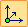

Keypoint Curve command bar
Main Steps
- Select Points Step
-
Defines the points used to create the curve.
- End Conditions Step
-
Specifies the end conditions for the curve and whether the curve is open or closed.
- Curve Length Step
-
Sets fixed length options for the curve.
- Preview/Finish/Cancel
-
This button changes function as you move through the feature construction process. The Preview button shows what the constructed feature will look like, based on the input provided in the other steps. The Finish button constructs the feature. After previewing or finishing the feature, you can edit it by re-selecting the appropriate step on the command bar. The Cancel button discards all input and exits the command.
- Open
-
Sets the curve type to open.
- Closed
-
Sets the curve type to closed. The start and end points of a closed curve are coincident. If the start and end points you selected are not coincident, and you set the Closed option, a keypoint that is coincident with the start point is automatically added to the curve.
When you set this option, the Start and End options are automatically set to Periodic. Periodic curves are closed, connected, and tangent at the first and last points on the curve.
- Start
-
Specifies the end condition for the start end of the curve. You can specify whether or not the start point of the curve is tangent to an element you select, and the length of the tangent vector. You can define the length of the tangent vector by dragging the tangent vector handle using the mouse or you can type a value.
- End
-
Specifies the end condition for the finish end of the curve. You can specify whether or not the start point of the curve is tangent to an element you select, and the length of the tangent vector. You can define the length of the tangent vector by dragging the tangent vector handle using the mouse or you can type a value.
- Other command bar Options
- Name
-
Displays the feature name. Feature names are assigned automatically. You can edit the name by typing a new name in the box on the command bar or by selecting the feature and using the Rename command on the shortcut menu.
Selecting a Point Options
Allows you to redefine the location of an existing point you select. You can use the Relative/Absolute option on the command bar to redefine its position relative to its current position or with respect to its absolute position in the document. You can type a new coordinate in the X, Y, or Z boxes, select a keypoint, click a point in space.
Sets the type of keypoint you can select to define a feature extent or to position a new reference plane. This allows you to define the feature extent or the location of the reference plane using a keypoint on other existing geometry. The available keypoint options are specific to the command and workflow you use.
|
Selects the center point of a circle or arc or an end point. |
|
 |
Selects any keypoint. |
 |
Selects an end point. |
 |
Selects the center point of a circle or arc. |
 |
Selects a midpoint. |
 |
Selects a silhouette point. |
 |
Selects an edit point on a curve. |
 |
Selects an x,y,z point in free space. |
|
Does not allows you to select any keypoints. |
When the keypoint filter is Any Keypoint or XYZ, this control specifies whether the value you type is relative to the point's current position or is based on the global origin of the document. The global origin is the point where the three default reference planes intersect (the exact center of the design space).
Sets the absolute position for the x axis. dX sets the relative position.
Sets the absolute position for the y axis. dY sets the relative position.
Sets the absolute position for the z axis. dZ sets the relative position.
Clears the selection.
Accepts the selection.
End Conditions Step
Sets the curve type to open.
Sets the curve type to closed.
When the curve type is open, you can set tangency control options at the start and end points of the curve.
This option sets whether or not the tangency control lists are shown tethered to the curve end points.
Tangency Handle
-
Natural
Specifies that their is no constraining condition enforced at the end point.
Normal to FaceSpecifies that the shape of the curve at the end point is normal to an adjoining face or plane.
Tangent ContinuousSpecifies that the shape of the curve at the end point is tangent-continuous with the adjoining edge.
Curvature ContinuousSpecifies that the shape of the curve at the end point is curvature-continuous with the adjoining edge.
Tangency Control HandleSets the magnitude of the tangent vector. Larger values create larger radii along the curve.
Curve Length Step
Specifies whether the curve is fixed in length or not.
Specifies the constrain direction in which the control points move when the curve length increases or decreases.